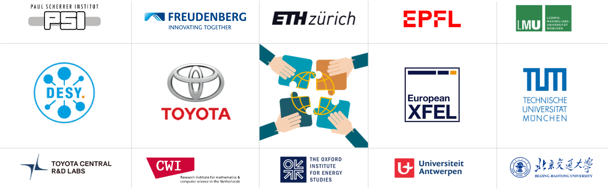
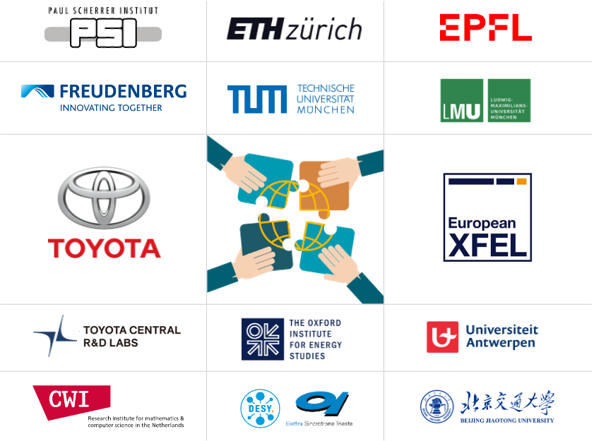
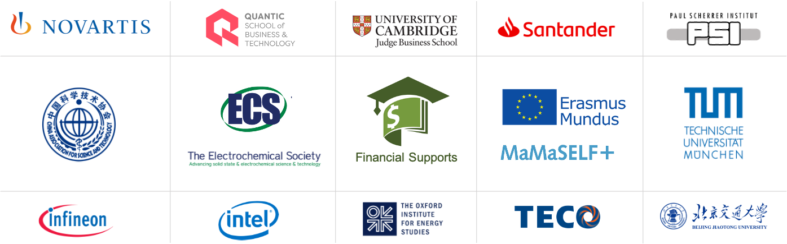
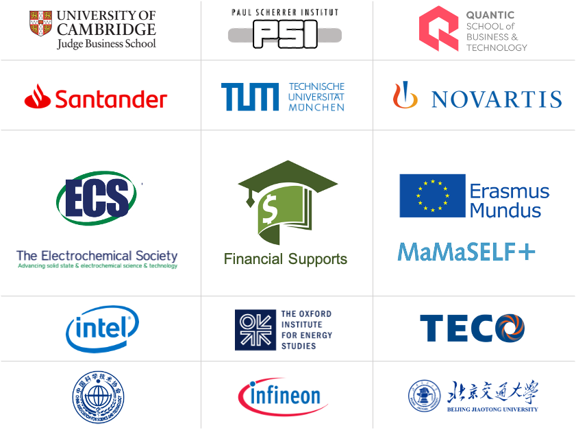

德国 汉堡
德国 汉堡 法国 巴黎
法国 巴黎 瑞士 苏黎世
瑞士 苏黎世 美国 华盛顿特区
美国 华盛顿特区 英国 牛津
英国 牛津
嗨，你好!
欢迎来自的朋友 :-）
 简 /
简 / 
 繁
繁
欢迎来自的朋友 :-） 目前，徐泓博士在牛津能源研究所担任访问学者，专注于中欧氢能战略与经济研究，致力于实现能源与交通领域碳中和。曾在联合国波恩气候变化大会主持“中国能源转型与技术创新”主题的分会，参与联合国欧洲经济委员会内陆交通与气候变化专家组会议。攻读学位期间与海外企业及中欧学术机构合作发表一作和共同作者论文10余篇，并获得多项专利授权。同时他还担任多项能源和交通领域高引期刊的审稿人, 以及圣加仑国际经济论坛的学术评审。曾获得美国电化学学会论文邀请及旅行奖、英特尔边缘AI奖学金、欧盟伊拉斯谟奖学金等。
他于2021年初获得苏黎世联邦理工大学博士学位，硕士毕业于慕尼黑工业大学。本硕博期间学术研究专注于碳中和/新能源领域，与瑞士联邦-保罗谢尔研究院以及欧洲X射线电子激光器等国际研究机构，以及日本丰田汽车、德国英飞凌科技、德国科德宝集团等全球化公司开展深度研发合作。此外，他被美国量化商学院全奖录取远程学习并颁发MBA学位，曾获桑坦德银行奖学金赴剑桥大学嘉治商学院学习"绿色转型"企业管理课程，并曾在头部证券研究所 (A股&美股) 撰写个股深度/行业研究报告以及在双币基金 (种子轮➔A轮) 从事新能源赛道风投实践。
PEK (NǐHǎo)-> CDG (Bonjour)-> HAM (MoinMoin)-> MUC (Servus)-> ZRH (Grüezi)-> LHR (Hello)-> ?

可持续发展目标 2030

教育背景
- 2023-至今 | 访问学者, 能源经济与政策
英国 · 牛津能源研究所 (智库/Fellow)
____
- 2017-2021 | 博士, 新能源科技
瑞士 · 苏黎世联邦理工大学 (岗位制/全奖)
- 2014-2016 | 硕士, 材料学/物理学
德国 · 慕尼黑工业大学 (欧盟/EM奖学金) - 2009-2013 | 本科, 材料化学
中国 · 北京交通大学 (专利授权)
____
- 2023-2023 | 高级管理教育, 绿色转型
英国 · 剑桥大学商学院 (桑坦德银行奖学金)
- 2019-2021 | MBA, 工商管理/可持续发展
美国 · 量化商学院 (全奖/Fellow)
研究兴趣
H
氢 (能源)
Li
锂 (电池)
C
碳 (中和)
Si
硅 (光伏)
Re
学术研究
In
产业升级
Po
政策引导
Sc
社会参与
- 新能源技术、氢能/光伏/锂电、碳中和、低碳智慧交通
- 能源经济学、能源政策、ESG投资、数字可持续发展
- 功能材料、半导体、高分子、MOFs、3D打印、材料LCA
- 计算机成像、X射线技术、图像处理、计算机视觉
- 股票研究、大数据分析、商业分析
学术职能
- 国际组织:
- 联合国欧洲经济委员会-内陆运输气候变化影响评估及适应专家组 会议成员 (UNECE-ITC, 2023)
- 联合国波恩气候变化大会 青年代表 (UN Bonn Climate Change Conference, 2023)
- 国际数字可持续发展协会 联合创始人 (Digital Sustainability Association, 2023)
- 智库:
- 英国牛津能源研究所 访问研究员 (Oxford Institute for Energy Studies, 2023)
- 瑞士圣加仑国际经济论坛 学术评审 (St. Gallen Symposium, 2023)
- 审稿人(30+篇):
- 能源转换与管理杂志 (Energy Conversion & Management, 影响因子: 11.2, 2021)
- 电源杂志 (J. Power Sources, 影响因子: 9.13, 2022)
- 国际氢能杂志 (Int. J. Hydrogen Energy, 影响因子: 7.14, 2021)
- 可持续发展能源杂志 (Energy for Sus. Devel., 影响因子: 5.76, 2021)
- 国际传热传质杂志 (Int. J. Heat & Mass Transfer, 影响因子: 5.58, 2022)
- 绿色科技与可持续发展杂志 (Green Tech. and Sustainability, 新刊, 2022)
- 绿色能源与智慧交通杂志 (Green Energy and Intelligent Transportation, 新刊, 2022)
- 学术/行业协会:
- 德国工程师协会 会员 (VDI, 2023)
- 美国电化学学会 文章受邀/会议资助 (ECS, 2019)
- 国际电化学学会 会员 (ISE, 2018)
- 德国物理学学会 会员 (DPG, 2016)
课研指导
- 课程助教:
- 可再生能源技术II (苏黎世联邦理工大学, 春季硕士课程, 2017-2019 [链接])
- 研究助理:
- 氢能 & 燃料电池 (能源与环境部, 瑞士联邦研究院 | 2016-2021)
- 半导体 & 传感器 (物理系, 慕尼黑工业大学 | 2015-2016)
- 太阳能电池 & 锂电池 (理学院, 北京交通大学 | 2012-2013)
- 超快X光CT成像 (X射线断层摄影组, 瑞士同步辐射光源 | 2017-2020)
- 小角度X光散射成像 (X射线散射组, 德意志电子加速器 | 2015-2016)
- 高能X光材料成像 (材料成像与动力学组, 欧盟自由电子激光器 | 2015)
- 学生指导:
- 慕尼黑工业大学-校友指导 (TUM Mentoring Program | 2021-至今)
- 瑞士联邦研究院-科研指导 (PSI图像处理实习生 | 2018-2019)
学术论文 (引用数: 230+)
-
H. Xu* [PSI], M. Bührer, F. Marone, Prof. T. J. Schmidt, F. N. Büchi, J. Eller
Effects of gas diffusion layer substrates on PEFC water management: Part II. In situ liquid water desaturation via evaporation [J]
译文: 气体扩散层基材对质子交换膜燃料电池水管理的影响II: 原位液态水蒸发研究
2022 | J. Electrochem. Soc. [PDF][瑞士光源] -
S. van Rooij, M. Magnini, A. Mularczyk, H. Xu* [PSI], F. N. Büchi [PSI], Prof. S. Haussener
[EPFL]
Conductive heat transfer in partially saturated gas diffusion layers with evaporative cooling [J]
译文: 自蒸发冷却设计的燃料电池部分饱和气体扩散层中的传导传热研究
2022 | J. Electrochem. Soc. [PDF][瑞士光源] [洛桑联邦理工] -
H. Xu* [PSI], S. Nagashima [Toyota], H. Nguyen, K. Kishita, F. Marone, F. N. Büchi, J.
Eller [PSI]
Temperature dependent water transport mechanism in PEFC gas diffusion layers revealed by subsecond operando X-ray tomographic microscopy. [J]
译文: 亚秒级原位X射线断层摄影技术揭示质子交换膜燃料电池气体扩散层中的温度依赖性水传输机制研究
2021 | J. Power Sources [PDF][瑞士光源] [丰田汽车] -
M. Bührer, H. Xu* [PSI], A. Hendriksend, F. N. Büchi, J. Eller, Prof. M. Stampanoni [ETH],
F. Marone [SLS]
Deep learning based classification of dynamic processes in time-resolved XTM [J]
译文: 基于深度学习的时间分辨X射线断层摄影技术动态过程分类
2021 | Scientific Reports [PDF][瑞士光源] [CWI阿姆斯特丹] -
H. Xu* [PSI], M. Bührer, F. Marone, Prof. T. J. Schmidt [ETH], F. N. Büchi, J. Eller
[PSI]
Effects of gas diffusion layer substrates on PEFC water management: Part I. Operando liquid water saturation and gas diffusion properties [J]
译文: 气体扩散层基材对质子交换膜燃料电池水管理的影响I: 原位液态水饱和度和气体扩散特性研究
2021 | J. Electrochem. Soc. [PDF][瑞士光源] -
M. Bührer, H. Xu* [PSI], J. Eller, Prof. J. Sijbers, Prof. M. Stampanoni [ETH], F. Marone
[SLS]
Unveiling water dynamics in fuel cells from time-resolved tomographic microscopy data [J]
译文: 使用时间分辨X射线断层摄影数据揭示燃料电池中的水动力学
2021 | Scientific Reports [PDF][瑞士光源] [安特卫普大学] -
C. Csoklich, H. Xu* [PSI], F. Marone, Prof. T. J. Schmidt [ETH], F. N. Büchi [PSI]
Laser Structured Gas Diffusion Layers for Improved Water Transport and Fuel Cell Performance [J]
译文: 用于改善水传输和燃料电池性能的激光结构化气体扩散层
2021 | ACS Appl. Energy Mater. [链接][瑞士光源] -
H. Xu* [PSI], M. Bührer, F. Marone, Prof. T. J. Schmidt [ETH], F. N. Büchi, J. Eller
[ETH]
Optimal image denoising for operando XTM of liquid water in PEFC gas diffusion layers. [J]
译文: 燃料电池气体扩散层中液态水原位X射线断层摄影图像的最佳去噪研究
2020 | J. Electrochem. Soc. [PDF][瑞士光源] -
H. Xu* [PSI], F. Marone, S. Nagashima, H. Nguyen, K. Kishita, F. N. Büchi, J. Eller
(Invited) Exploring sub-second and sub-micron XTM imaging of liquid water in PEFC GDLs.[J]
译文: (受邀论文) 探索燃料电池气体扩散层中液态水的亚秒和亚微米级X射线断层摄影成像技术
2019 | ECS Transactions [PDF][瑞士光源] [丰田汽车] [ECS会议旅行奖] -
Y. Nagai [Toyota], J. Eller, T. Hatanaka, S. Yamaguchi, S. Kato, F. Marone, H. Xu* [PSI],
F. N. Büchi.
Improving water management in fuel cells through microporous layer modifications: Fast operando tomographic imaging of liquid water. [J]
译文: 通过微孔层改性改善燃料电池中的水管理: 液态水的快速原位X射线断层摄影成像
2019 | J. Power Sources [链接][瑞士光源] [丰田汽车] -
H. Xu* [PSI], M. Bührer, F. Marone, Prof. T. J. Schmidt [ETH], F. N. Büchi, J. Eller
[PSI]
Fighting the noise: towards the limits of subsecond X-ray tomographic microscopy of PEFC. [J]
译文: 对抗图像噪点: 迈向燃料电池亚秒级X射线断层摄影技术的极限
2017 | ECS Transactions [链接][瑞士光源] [ModVal最佳展报奖] -
Prof. H. Zhang, R. Wu, H. Xu* [BJTU], F. Li, S. Wang, J. Wang [BJUT], T. Zhang
A simple spray reaction synthesis and characterization of hierarchically porous SnO2 microspheres for an enhanced dye sensitized solar cell. [J]
译文: 用于增强染料敏化太阳能电池的分级多孔二氧化锡微球的简单雾化反应合成和表征
2017 | RSC Advances [链接 ][BJTU] -
张辉教授 [BJTU], 徐泓* [BJTU], 万金秀, 颜鲁婷教授, 戴春爱
Preparations of new porous oxides spherical powders by spray reaction technique. [J]
新型多孔氧化物球形粉末的雾化反应法制备 [J]
2012 | 《真空与低温》 [链接][BJTU] -
祁晓月, 徐泓* [BJTU], 周兴振
Degradation of highly active cypermethrin via ultrasonic irradiation combined with photocatalysis by TiO2
超声波-二氧化钛光催化耦合法降解高效氯氰菊酯 [J]
2012 | 《化学研究》 [链接][BJTU]
国家专利 (引用数: 15+)
-
环形气液界面跳汰磁选装置 [P]
发明人: 富鸣教授, 张辉教授, 徐泓[BJTU], 颜鲁婷教授
2013 | 中国发明专利号: CN102441489B, 生效日期: 10/2013. [专利文件] -
可连续运行的气液界面跳汰磁选可控环形装置 [P]
发明人: 张辉教授, 徐泓[BJTU], 富鸣教授, 颜鲁婷教授
2013 | 中国发明专利号: CN102441490A, 生效日期: 11/2013. [专利文件] -
超声 - 光催化氧化耦合果蔬清洗装置 [P]
发明人: 周兴振, 徐泓[BJTU], 江红教授, 祁晓月
2012 | 中国实用新型专利号: CN202311136U, 生效日期: 05/2012. [专利文件]
学位论文 (浏览量: 1900+)
-
H. Xu [ETH], Prof. T. J. Schmidt (导师/ETH), Prof. M. Stampanoni (合作导师/ETH), Dr. J.
Eller
Subsecond Operando X-ray Tomographic Microscopy of Liquid Water in Polymer Electrolyte Fuel Cells [D]
译文: 氢燃料电池中液态水的亚秒级原位X射线断层显微技术研究 [D]
2021 | 博士学位论文. 苏黎世联邦理工大学, 苏黎世, 瑞士. [PDF] -
H. Xu [TUM], Prof. P. Müller-Buschbaum (导师/TUM), Prof. W. Schmahl (合作导师/LMU), Dr. E.
Metwalli
Structure & Properties of Thermoresponsive DBC Embedded with Metal Oxide Nanoparticles. [D]
译文: 嵌入金属氧化物纳米颗粒的热膨胀性二元共聚物的结构和性能研究 [D]
2016 | 硕士学位论文. 慕尼黑大学 & 慕尼黑工业大学. 慕尼黑, 德国. [PDF] -
徐泓 [BJTU], 张辉教授 (导师/BJTU)
Application of Mesoporous SnO2 Materials in Dye-sensitized Solar Cells and Lithium Batteries. [D]
原文：介孔二氧化锡材料在染料敏化太阳能电池和锂电池中的应用研究 [D]
2013 | 本科学位论文. 北京交通大学. 北京, 中国. [PDF]
博士毕业典礼
学术合作 (2013-2023)
 
学术会议 (2013-2023)
-
H. Xu, 维也纳国际能源与气候论坛
International Vienna Energy and Climate Forum
2023 | 维也纳霍夫堡皇宫会议中心, 维也纳, 奥地利. [参会] [链接] -
H. Xu, 联合国欧洲经济委员会-内陆运输气候变化影响评估及适应专家组会议
Group of Experts on Assessment of Climate Change Impacts and Adaptation for Inland Transport
2023 | 联合国日内瓦万国宫, 日内瓦, 瑞士. [参会] [链接] -
H. Xu, 中国能源转型和技术创新 (分会场)
Chinese Energy Transition and Technology Innovation
2023 | 联合国波恩气候变化大会, 波恩, 德国. [主持人/演讲者] [链接] -
H. Xu, 全球科技大会：商业创新如何产生影响
Global Tech Conference: Where Business Innovation Makes a Difference
2023 | 信息通信技术(ICT)春季会议, 卢森堡. [参会] [链接] -
H. Xu, 重修契约：重新定义世代契约责任
A New Generational Contract: Redefining What We Owe Each Other
2023 | 第52届圣加仑研讨会, 圣加仑, 瑞士. [学术评审] [链接] -
H. Xu, 创新与创业：公共科学对企业研发的影响
Innovation & Entrepreneurship: The Effect of Public Science on Corporate R&D
2023 | 马克斯·普朗克创新与竞争研究所, 慕尼黑, 德国. [参会] [链接] -
H. Xu, 2022年转型交通：以气候为中心的流动性，以实现可持续复苏
Transforming Transportation 2022: Climate-centered Mobility for a Sustainable Recovery
2022 | 交通转型论坛, 在线，美国. [参会] [链接] -
H. Xu [PSI], M. Bührer, F. Marone, T. J. Schmidt, F. N. Büchi, J. Eller
Influence of Pore Size Distribution on Operando GDL Liquid Saturation.
2019 | 第236届电化学学会会议 (ECS), 亚特兰大, 美国. [演讲] [链接] -
H. Xu [PSI], M. Bührer, F. Marone, T. J. Schmidt, F N. Büchi, J. Eller
Advancements in 10Hz operando X-ray Tomographic Imaging of Water in GDLs of PEFC.
2018 | 第8届燃料电池基础研究与前沿发展国际会议 (FDFC), 南特, 法国. [演讲] [链接] -
H. Xu [PSI], M. Bührer, F. Marone, T. J. Schmidt, F N. Büchi, J. Eller
Studies of Water Distribution in the Gas Diffusion Layer of PEFCs using X-ray Tomographic Microscopy
2018 | 第69届国际电化学学会年度会议 (ISE), 博洛尼亚, 意大利. [展报] [链接] -
H. Xu [PSI], M. Bührer, F. Marone, T. J. Schmidt, F N. Büchi, J. Eller
Water Distribution in the Gas Diffusion Layer of PEFCs: X-ray Tomographic Microscopy Studies
2018 | 第15届燃料电池建模与实验验证研讨会 (ModVal), 阿劳, 瑞士. [最佳展报奖] [链接] -
H. Xu [PSI], M. Bührer, F. Marone, T. J. Schmidt, F. N. Büchi, J. Eller
Quantification of Feature Detectability for Subsecond X-ray Tomographic Microscopy of PEFC.
2017 | 第6届欧洲有机薄膜燃料电池及电解池论坛 (EFCF), 卢塞恩, 瑞士. [演讲] [链接 ] -
H. Xu [PSI], M. Bührer, F. Marone, T. J. Schmidt, F. N. Büchi, J. Eller
Contrast-to-Noise Ratio Evaluation for X-ray Computed Tomographic Imaging of Water in Polymer Electrolyte Fuel Cells
2017 | 第14届燃料电池建模与实验验证研讨会 (ModVal), 卡尔斯鲁厄, 德国. [展报] [链接] -
H. Xu [TUM], E. Metwalli, P. Müller-Buschbaum
Nanoparticles Embeded Thermoresponsive Diblock Copolymers for Magnetic Sensor Application.
2016 | 2016年欧盟伊拉斯谟MaMaSELF项目年度会议, 瑞吉山, 瑞士. [演讲] [链接] -
H. Xu [TUM], E. Metwalli, P. Müller-Buschbaum
Magnetic properties and structure of thermoresponsive polystyrene-block-poly(N-isopropylacrylamide)/iron oxide nanocomposite thin films.
2016 | 第80届德国物理学会年会及DPG春季会议 (DPG), 雷根斯堡, 德国. [展报] [链接] -
H. Xu [BJTU], Prof. H. Zhang, R. Wu
Mesoporous SnO2 Microspheres: Synthesis, Characterization, and Application in Enhanced Dye-sensitized Solar Cells and Lithium Batteries.
2013 | 2013年清华大学能源粒子前沿研讨会, 北京, 中国. [展报] [链接]
行研报告
- 行业宏观研究 (大中华区):
2022 | 新能源行业: 双碳政策下的中国新能源行业创业驱动力
2020 | 新材料行业: 半导体材料系列之四：5G拉动光通信产业链，磷化铟材料蓄势待发
- 一级市场研究 (A至D轮融资公司):
2021 | 驭势科技: 科技先锋系列报告之驭势科技: 多场景自动驾驶解决方案提供商
2021 | 芯驰科技: 科技先锋系列报告之芯驰科技: 智能汽车自主IP芯片提供商
2021 | 西安奕斯伟: 西安奕斯伟研究分析报告
- 二级市场研究 (A股&美股上市公司):
2021 | 沪硅产业 (688126.SH): 大硅片先锋引领芯片国产替代 (首次覆盖报告)
2021 | CREE (NASDAQ:CREE): 科技先锋系列报告之CREE: 全球功率/射频器件及LED提供商 (美股)
2021 | 经纬恒润 (688326.SH): 科技先锋系列报告之经纬恒润: 汽车电子科技系统服务商
2020 | 天科合达 (870013.OC): 国内领先的SiC晶片生产商
2020 | 立昂微 (605358.SH): 国产替代市场广阔，大硅片产业化在即
2020 | 国瓷材料 (300285.SZ): 义齿用陶瓷材料行业，氧化锆材料势头向好
演讲 & 主持
-
2023 | 联合国波恩气候变化大会 分会场主持人: 中国能源转型与技术创新（全球直播）
-
2022 | IN3 资本沙龙 受邀嘉宾: 举足"氢"重, 下重注的“氢能源”到底好在哪里 (第8场, 100+线上参会)
-
2022 | 奇绩创坛 内部分享: 碳中和愿景下的新能源机遇与挑战—科技前沿，政策及投资机会 (50+线上参会)
-
2022 | 博士变形计 栏目主持人: 集成电路/芯片/半导体/前沿—国内外博士生在线圆桌会 (100+线上参会)
-
2021 | Clubhouse 主持人: 能源危机下的博士视野—聚焦各国新能源政策/技术 (光/风/锂/氢/核）(200+成员)
联合国公开演讲
写作
-
2023 | 留欧十年 ⋅ 博士变形计 (回忆录): Once Upon A PhD: Ten Years in Europe (正在写作中)
-
2022 | 汇银资本 (公众号转载): 新能源太极图：锂电vs氢能，谁可摘得碳中和王冠
-
2022 | 知乎圆桌 (世界新能源汽车大会主办): 新能源的三大流派: 换电, 充电, 氢燃料, 到底哪一个会是未来?
-
2022 | 博士变形计 (公众号原创): 俄乌冲突：欧洲能源安全的暗流与危机，及中美影响
荣誉
- 2023 | 绿色转型项目-剑桥大学嘉治商学院 [链接], 桑坦德银行奖学金, 英国.
- 2021 | PSI研究成果高亮展示 [链接], 保罗谢尔研究院 (PSI), 瑞士.
- 2019 | JES编辑高亮展示 [链接], 美国电化学学会期刊 (JES), 美国.
- 2019 | ECS会议旅行奖 [证明], 美国电化学学会资助, 华盛顿特区, 美国.
- 2018 | 最佳展报奖 [证书], ModVal会议组委会, 阿劳, 瑞士.
- 2015 | 欧盟伊拉斯谟奖学金, 欧盟教育, 视听和文化执行机构颁发, 法国.
- 2012 | 东元科技决赛入围奖 [证书], 台北TECO技术基金会颁发, 台北, 中国.
- 2012 | 国家级铜奖 [证书], 第八届挑战杯商业计划大赛, 教育部颁发, 北京, 中国.
- 2012 | 创新奖学金, 北京交通大学颁发, 北京, 中国.
- 2010 | 连续三年学习奖学金, 北京交通大学颁发, 北京, 中国.
研习资助 (2010-2023)
 
专业培训
- 2020 | 机器学习应用Program, 洛桑联邦理工学院, 洛桑, 瑞士.
- 2020 | 工业CT应用, 奥地利应用技术大学, 威尔士, 奥地利.
- 2019 | IBM数据科学专业证书, IBM Inc. & Coursera, 美国. [证书]
- 2019 | 机器学习与成像, 伯尔尼大学, 伯尔尼, 瑞士.
- 2019 | 诺华医药数据科学黑客松, 诺华领导力论坛, 卢塞恩, 瑞士.
- 2019 | 神经网络与深度学习, deeplearning.ai & Coursera, 美国. [证书]
- 2019 | 瑞士 Mobility Program, 苏黎世大学银行金融系, 苏黎世, 瑞士.
- 2017 | 生物医学成像暑期学校, 苏黎世大学附属医院 (USZ), 苏黎世, 瑞士.
- 2016 | 应用物理暑期学校, 慕尼黑工业大学, 慕尼黑, 德国.
- 2015 | X光与中子散射暑期学校, 蒙彼利埃大学, 蒙彼利埃, 法国.
参访
- 政府/国际机构：联合国欧洲总部 (日内瓦, 2023)、联合国维也纳分部 (维也纳, 2023)、联合国波恩分部 (波恩, 2023)、联合国总部 (纽约, 2019)、法国塞纳河-诺曼底水务局 (巴黎, 2016)、苏州市城市规划局 (江苏, 2016)、郑州市生态环境局 (河南, 2014)、开封市环境保护局 (河南, 2014)
- 同步辐射加速器：欧洲核子研究中心/CERN (日内瓦, 2023)、瑞士光源/SLS (菲利根, 2017)、意大利同步加速器/Elettra (的里雅斯特, 2016)、欧盟自由电子激光器/EUXFEL (汉堡, 2016)、德国电子加速器/DESY (汉堡, 2016)、法国同步辐射加速器/SOLEIL (巴黎, 2015)
- 核能反应堆：瑞士贝茨瑙核电站 (阿尔高州, 2018)、法国萨克雷核研究中心 (巴黎, 2015)、海因茨·莱布尼茨中子源研究院 (慕尼黑, 2016)
旅行
- 亚洲：中国大陆 (13+ 省/市)、台湾、俄罗斯、土耳其、泰国
- 欧洲：奥地利、比利时、波斯尼亚和黑塞哥维那、克罗地亚、 捷克、丹麦、爱沙尼亚、法国 (5+ 城市)、芬兰、德国 (25+ 城市)、匈牙利、冰岛、爱尔兰、意大利、列支敦士登、卢森堡、马耳他、荷兰、挪威、葡萄牙、波兰、塞尔维亚、斯洛伐克、斯洛文尼亚、西班牙、瑞典、瑞士 (30+ 城市)、英国
- 北美：加拿大、美国
- 非洲：大加那利群岛 (西属)
- 合计：到访35个国家/地区 (全球共197个)

技能
-
英语 (流利, C1), 中文 (母语, C2), 德语 (中阶, B1),
法语 (基础, A2)
-
摄影网站, 写作, 视频剪辑, 徒步, 骑行 (环苏黎世湖), 旅行 (30+国家), 乒乓球,
中西餐料理
联系我
- 邮箱: h.xu
[at] tum.de
- 领英: linkedin.com/in/xuhong/
- 谷歌学术: UNchM2kAAAAJ&hl